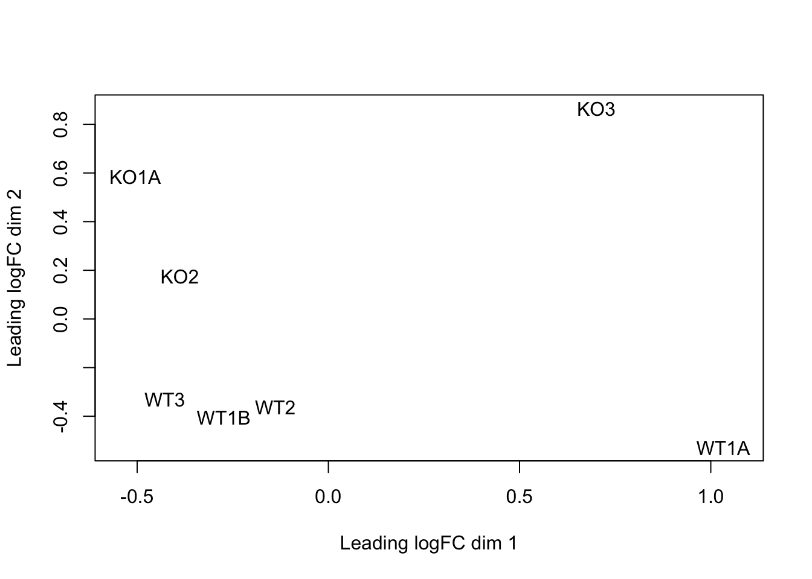
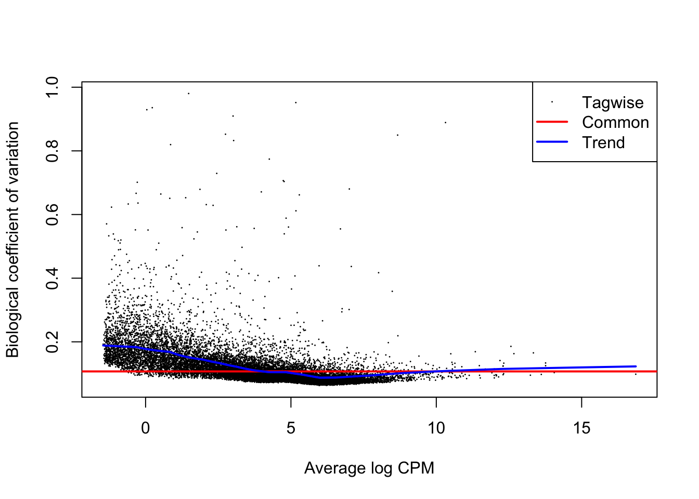
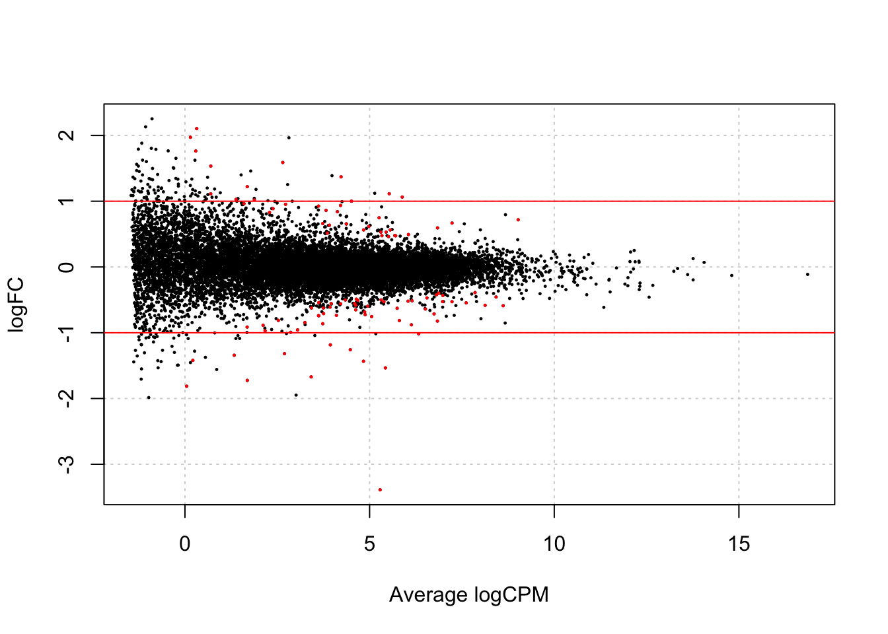

Discovering Differentialy Expressed Genes (DEGs)
The first ‘real’ analysis step we will do is finding genes that show a difference in expression between sample groups; the differentially expressed genes. The concept might sound rather simple; calculate the ratios for all genes between samples to determine the fold-change (FC) denoting the factor of change in expression between groups. Then, filter out only those genes that actually show a difference. While this does give a list of genes showing different behaviour across samples, we need to focus on genes that do not only show a difference, but are also statistically significant!
To determine whether or not a gene can be classified as a significant DEG we are going to use - at least - two techniques:
- We will start with manually performing statistical test(s)
- and compare these results from those given by using one or more Bioconductor libraries (mostly
edgeRandDeSEQ2)
4.1 Pre-processing
Given the results of the exploratory data analysis performed in chapter 3, you might have concluded that there are one or more samples that show (very) deviating expression patterns compared to samples from the same group. If you have more then enough (> 3) samples in a group, you might opt to remove a sample to reduce the noise, as the statistical tests are very sensitive to this. Since we are performing all analysis steps programatically it is also very easy to test for DEGs with and without the sample(s) in question and see if the removal results in lower p-values (= higher significance). If this is the case you can continue on without those sample(s). As always, be sure to properly document this, including the reason why you chose to remove them.
Another step we need to take - and this might be guided by your article - is to filter out (partially) inactive genes. Most datasets available contains a lot of 0-measurements, transcripts where no reads have mapped. In an experiment with two groups, three replicates each, if three out of those six samples have 0-reads mapped, it is often adviced to remove the gene completely. But this can be very subjective to the experiment, it might be expected (thus important) when comparing different tissues or knockout experiments. Also, genes with a (very) low read count can give a very high (artificial) FC value (see the lefthand side of an MA-plot). Comparing two samples where one has a value of 2 and the other 11, this reads as an up-regulated gene by a factor of 5.5 while it might actually just be noise!
- Assignment: Search through your article for any advice on how to filter out zero values or low count genes. If there is nothing stated on this subject, think of your own tactic (or search the literature/ online!). It is perfectly fine to discuss with your peers.
- describe what you will be doing for this aspect; if you do not filter your data, clearly explain why not (most likely because the article stated a proper reason)
- Perform the filtering on your dataset. For this you will most likely need to use one of the
applyfunctions, combined with maybe thewhich,allandanyfunctions. - Manually verify that the rows removed were correctly filtered.
- Properly document how many genes have been filtered out!
4.2 The Fold Change Value
The FC is usually given as the calculated log2 of the case/control ratio. For example, gene A has an average expression of 30 mapped reads in the control group and 88 reads in the experiment group, the ratio case/control is 2.93. Values > 1 indicate increased expression in the experiment in relation to the control and values between 0 and 1 indicate lower expression. The log2(2.93) is 1.55. If the counts were reversed, the ratio would have been 30/88, which is 0.34. The previously calculated value of 2.93 means a 3-fold up regulation while the 0.34 value means 3-fold down regulation but you can see the range of numbers is very different. Comparing log2 values this would be 1.55 and -1.55 which compares much better.
While it is very easy to calculate the FC for all genes at once, a simple FC value doesn’t mean much, yet! We still need to use the power that lie within the replicates we have for each sample group. Using these replicates, we want to determine if the observed FC is not just biological noise or a sequencing error.
- Assignment: Create a
histogramof your log2-FC values for all genes. Apply the following steps to do this:- average the replicates for each group and add this as a new column to your data set,
- calculate the ratios; simply divide one group (averaged-column) by another, usually
experiment/control, - perform a log2-transformation (now you have the
log2-FCvalues), - plot the data using the
hist(logFC_column, breaks=60)function (change thebreaksargument if needed), - Add two vertical lines at
-1and1(usingabline(v=...)) to indicate some significance (2-fold change).
If a calculated FC shows a large change in expression between groups this means nothing if the variation within a group is very high. For this reason we use some form of statistical test that checks both the variation in each group and the difference between groups of samples. In the simplest form this usually comes down to using a t-test:
“It can be used to determine if two sets of data are significantly different from each other”
It does however depend on your experimental setup when it comes down to deciding the proper statistical test to perform and for that it is best to look at your experiment article to see what the authors used for method.
The output of finding DEG’s always includes - but is not limited to - a list of p-values, usually one p-value per gene. This value indicates whether that gene is a statistically-significant differentially expressed gene (SDEG) and to find these genes of interest all we need to do is get all genes with a p-value below our threshold (i.e. 0.05). Because we will get at least two p-values per gene (one found using manually statistical testing and one through the use of a library) we can make multiple selections, i.e. compare methods, find genes that have a low p-value in both methods and visualize these results in a venn-diagram (see section visualization).
4.3 Using Manual Methods (t-test & ANOVA)
Performing the statistical tests yourself consists of performing either a t-test or an ANOVA based analysis. Both of these methods have multiple forms and the one to choose fully depends on what question you’d like to ask. Again, refer to your experimental setup and any hints found in the article or formulate your own question and base the decision on that.
Manually performing a t-test or ANOVA on gene expression opposed to using one of the specialized libraries can have advantages since every gene is processed individually, while edgeR and DESeq2 look at all genes and this might ‘smooth’ the results which is not always wanted. We will find out later if and how this affects your data set.
If your data only consists of the read counts there is an extra normalisation step to perform (only for the manual methods explained in this section, keep the count data stored as well!). One generally accepted method of normalizing count data is to calculate the fragments per million mapped fragments (FPM) value and then transform this with log2. Opposed to FPKM and RPKM this does not include the gene-length in its calculation (which you most likely don’t have) but as said before we apply the test per gene and do not need to compare multiple genes. If your dataset also includes FPKM or RPKM (pre-normalized), you are allowed to use this data too. Always clearly document if you did so! Once you performed a manual statistical text, be sure to read the section on Multiple Testing Correction further on in this chapter.
# Perform FPM normalization using DESeq2 'fpm' and perform log2 transformation
# The 'ddsMat' object is the 'DESeqDataSet' created in chapter 4.
# NOTE: only for count data
counts.fpm <- log2( fpm(ddsMat, robust = TRUE) )Next is selecting the test to perform, the following links show diagrams that can be used once the experimental design is known:
What test to use links:
- Institute for Digital Research and Education
- Biochemia - image at the bottom of the article
- PracticallyScience
{kind=link}
4.3.1 Students T-test
In order to test if one or more genes are significantly differentially expressed between two conditions one can perform a t-test. The t-test will test the null hypothesis that there is no difference between the mean of the two populations. Usually, if the p-value is below the significance threshold chosen (also called alpha-value, usually set at \(\alpha\) 0.05) you reject the null hypothesis and conclude that there is a significant difference between the means. Note that you need to perform a single t-test for every gene (row) of your data set, including all replicates for the involved group.
From the output of the t-test you only need to keep the calculated p-value; one value per gene (row) in your data set. In R, you can append this as a column to your dataframe/ matrix containing the normalized count values.
t.test tutorials:
- Quick-R @ statmethods
- Whitehead Institute: based on microarray analysis, but it’s still expression data and the basics are the same.
4.3.2 Analysis of Variance (ANOVA)
If you have decided that you need to perform an ANOVA analysis the experimental design as well as the question to ask become much more important.
ANOVA tutorials
4.4 Multiple Testing Correction
Read the text about Multiple comparisons at the biostathandbook and the help of the p.adjust R function. Your article is a possible source to see which correction method they applied and this is not mentioned there it is probably best to use the fdr method (also called the Benjamini Hochberg method).
An expected side-effect of correcting for multiple-testing is the lower number of genes with a resulting p-value < 0.05 (caused by hopefuly removing false-positives). In some cases though, you end up with 0 genes that have a low p-value and thus you have no DEGs.
4.5 Using Bioconductor
This section demonstrates the use of two packages to perform DEG-analysis on count data and one library for processed FPKM/RPKM data. There are many packages available on Bioconductor for similar analysis, such as DSS, EBSeq and BaySeq but here we will focus on edgeR and DESeq2 for processing count-based data and briefly take a look at limma for processing FPKM/RPKM data.
Both edgeR and DESeq2 apply their own normalization methods (described in the sections below) therefore they only work on the count data. You can choose one of these two packages to use, or use both since it could increase statistical power and they are not very hard to use once you understand how to model the data as we’ll show next.
4.5.1 The Design (matrix)
For all of these packages you need to properly specify how your samples are grouped. We have seen examples of this using an R factor object with the heatmap, MDS and PCA visualizations to tell which groups of samples we have and to which group each sample belongs. Reading the documentation for the below packages shows that this is an important part of performing DE-analysis. For example, the following code is shown in de edgeR documentation on page 8 where two sample groups are defined (numbered 1 and 2), placed in a factor object and used as input in the model.matrix function.
## (Intercept) groupCase
## 1 1 0
## 2 1 0
## 3 1 1
## 4 1 1
## attr(,"assign")
## [1] 0 1
## attr(,"contrasts")
## attr(,"contrasts")$group
## [1] "contr.treatment"As mentioned before we need to think about the question we want to aks; which difference do we want to know? With two sample groups as used here the question is rather easy; ‘which genes show an effect between case/ control samples?’. With more then two sample groups however the question becomes more difficult. If we have an experiment comparing influence of three kinds of drugs (thus three groups) combined with effect over time, do we then want to focus on the influence of the drugs or the time? Both are valid questions but they define the way of how to create the design matrix.
Documentation on this subject is plenty, however it often contains overwhelming information. This page contains some valuable details (you can safely start reading at Choice of design), including the following text which is based on the same example used in the edgeR documentation:
“For the examples we cover here, we use linear models to make comparisons between different groups. Hence, the design matrices that we ultimately work with will have at least two columns: an intercept column, which consists of a column of 1’s, and a second column, which specifies which samples are in a second group. In this case, two coefficients are fit in the linear model: the intercept, which represents the population average of the first group, and a second coefficient, which represents the difference between the population averages of the second group and the first group. The latter is typically the coefficient we are interested in when we are performing statistical tests: we want to know if their is a difference between the two groups.”
If you have more then two sample groups and you want to change the question (i.e. test the influence of a different group), read the section about Releveling the factor.
4.5.2 DESeq2
We have used the DESeq2 library before and for DEG analysis we could re-use the DESeqDataSet object but it is adviced to create a new object with more data added, e.g. the sample annotation we retrieved from the GEO and the proper design formula instead of the ~ 1 we used before.
There is no need to normalize the data using the previously used rlog function because the DESeq2 library will normalize the count data for you as follows:
“DESeq computes a scaling factor for a given sample by computing the median of the ratio, for each gene, of its read count over its geometric mean across all samples. It then uses the assumption that most genes are not DE and uses this median of ratios to obtain the scaling factor associated with this sample.”
For our example data with just two groups we use the design ~ groups where groups is a simple factor with two levels (KO and WT). One note of importance though is that the first level in the factor is taken as the reference, or for expression analysis, the control group. In the example factor the KO level is the first which is the experiment group. Therefore we need to relevel the data (check the help and documentation if this is unclear):
## [1] KO KO KO WT WT WT WT
## Levels: KO WT## [1] KO KO KO WT WT WT WT
## Levels: WT KOOnce you have a proper DESeqDataSet all you need to do is run the DESeq function on this object. Then, using the results function you can extract the DEGs as a DESeqResults object. Applying the summary function on this object shows the number of up and down regulated DEGs:
##
## out of 20098 with nonzero total read count
## adjusted p-value < 0.05
## LFC > 0 (up) : 234, 1.2%
## LFC < 0 (down) : 289, 1.4%
## outliers [1] : 0, 0%
## low counts [2] : 5023, 25%
## (mean count < 12)
## [1] see 'cooksCutoff' argument of ?results
## [2] see 'independentFiltering' argument of ?resultsThe output of the results function contains the following columns for each gene:
| Column | Type | Description |
|---|---|---|
| baseMean | intermediate | mean of normalized counts for all samples |
| log2FoldChange | results | log2 fold change (MLE): groups KO vs WT |
| lfcSE | results | standard error: groups KO vs WT |
| stat | results | Wald statistic: groups KO vs WT |
| pvalue | results | Wald test p-value: groups KO vs WT |
| padj | results | BH adjusted p-values |
How you call the results function depends heavily on your experiment. As you can see from the output of the summary function, there are no details given about which comparison is shown (and also, a p-value of 0.1 is used instead of 0.05).
Depending on the design used to create the DESeqDataSet with, one or more comparisons can be made (applying the DESeq function calculates all and you filter with the results function). Read the help for the results function carefully; especially regarding the contrast argument where you define the comparison to retrieve. The following code is used for our example experiment:
Links
- Analyzing RNA-seq data with DESeq2 A very comprehensive guide to analyzing RNA-Seq data using DESeq2 (part of this document has been used in this material too!). It is adviced to read the first few sections of this guide and take a good look at the index of the document because there are many interesting sections that might be of help later.
- Publication, an accompanying article showing differences in performance compared to other methods and packages.
4.5.3 edgeR
One of the most mature libraries for RNA-Seq data analysis is the edgeR library available on Bioconductor. There is a very complete (sometimes a bit complex) manual available of which you need to read Chapter 2 with a focus on 2.1 to 2.7, 2.9 and - if you have a more complex design - 2.10. Section 1.4 (Quickstart) shows a code example on the steps needed to do DEG analysis using count data using the two glm methods (quasi-likelihood F-tests and likelihood ratio tests). All the steps shown there are identical for the non-glm method up to calculating the fit object which can be replaced by performing the exactTest function as shown in sectino 2.9.2.
The edgeR library will normalize the count data for you as follows:
“The trimmed means of M values (TMM) from Robinson and Oshlack, which is implemented in edgeR, computes a scaling factor between two experiments by using the weighted average of the subset of genes after excluding genes that exhibit high average read counts and genes that have large differences in expression.”
Running edgeR requires the raw count data together with the grouping-factor packaged in a DGEList object (with the DGEList() function). Furthermore, a proper model.matrix object (see the section on design) is needed as input for the estimateDisp function. The exact steps to take (there are more variations then with DeSEQ) must be searched in the documentation linked above.
Gene annotation has been added to the DGEList object that is used to run edgeR with the genes parameter. This data has been taken from the AnnotationDbi package as shown in chapter 5.
Once the analysis is done you can retrieve the actual results with the topTags function:
| logFC | logCPM | PValue | FDR | |
|---|---|---|---|---|
| Igf2as | -3.389 | 5.284 | 6.222e-108 | 9.969e-104 |
| Angptl4 | 1.063 | 5.884 | 2.846e-24 | 2.28e-20 |
| St8sia5 | -1.318 | 2.696 | 8.637e-15 | 3.04e-11 |
| Mrgprb1 | 0.8404 | 4.129 | 8.826e-15 | 3.04e-11 |
| Acot2 | 1.113 | 5.531 | 9.487e-15 | 3.04e-11 |
| Camk2b | -0.823 | 6.836 | 2.576e-14 | 6.879e-11 |
| Frzb | -1.258 | 4.477 | 4.54e-14 | 1.039e-10 |
| Cd36 | 0.7175 | 9.023 | 1.288e-13 | 2.58e-10 |
| Slc2a5 | -1.725 | 1.688 | 4.355e-13 | 7.753e-10 |
| Chi3l3 | 2.104 | 0.3187 | 5.666e-13 | 9.078e-10 |
The package also contains a few plotting methods that you can use at intermediate steps during the analysis. For instance, after calculating the normalization factors (calcNormFactors), you can perform multi-dimensional scaling with the plotMDS function:

Or the dispersion after running the estimateDisp function with the plotBCV function:

Or the log-fold changes for all genes, once we have the output of the exactTest function (output et is an DGEExact object) with the plotSmear function. The abline shows a log-FC threshold:
deGenes <- decideTestsDGE(et, p=0.001)
deGenes <- rownames(et)[as.logical(deGenes)]
plotSmear(et, de.tags=deGenes)
abline(h=c(-1, 1), col=2)
Links
- Differential Expression Analysis using edgeR tutorial
- Another tutorial hosted on GitHub
al., Patrick Deelen et. 2015. “Calling Genotypes from Public Rna-Sequencing Data Enables Identification of Genetic Variants That Affect Gene-Expression Levels.” Genome Medicine 7 (30).
Chen, Yunshun, Aaron Lun, Davis McCarthy, Xiaobei Zhou, Mark Robinson, and Gordon Smyth. 2018. EdgeR: Empirical Analysis of Digital Gene Expression Data in R. http://bioinf.wehi.edu.au/edgeR.
Daróczi, Gergely, and Roman Tsegelskyi. 2017. Pander: An R ’Pandoc’ Writer. https://CRAN.R-project.org/package=pander.
Love, Michael, Simon Anders, and Wolfgang Huber. 2017. DESeq2: Differential Gene Expression Analysis Based on the Negative Binomial Distribution. https://github.com/mikelove/DESeq2.